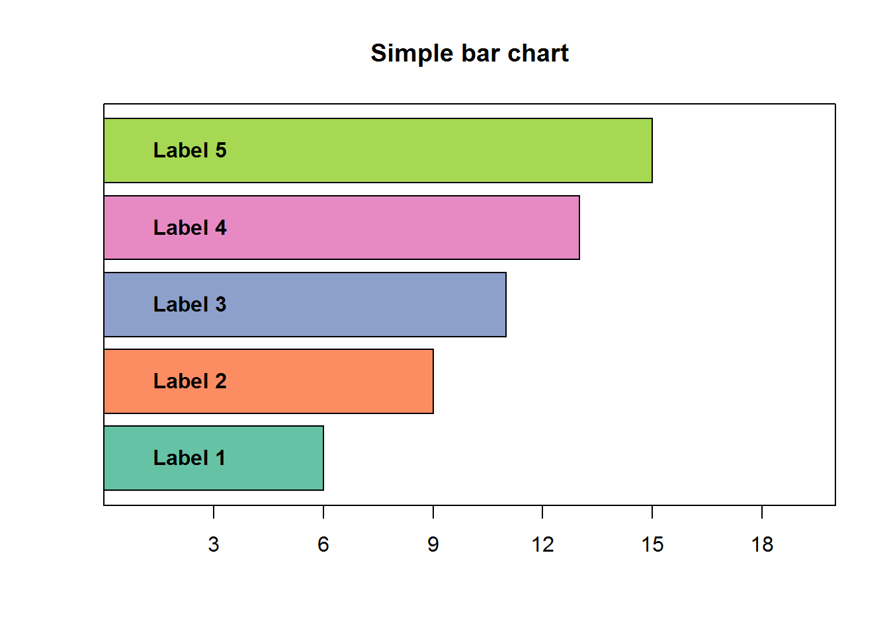
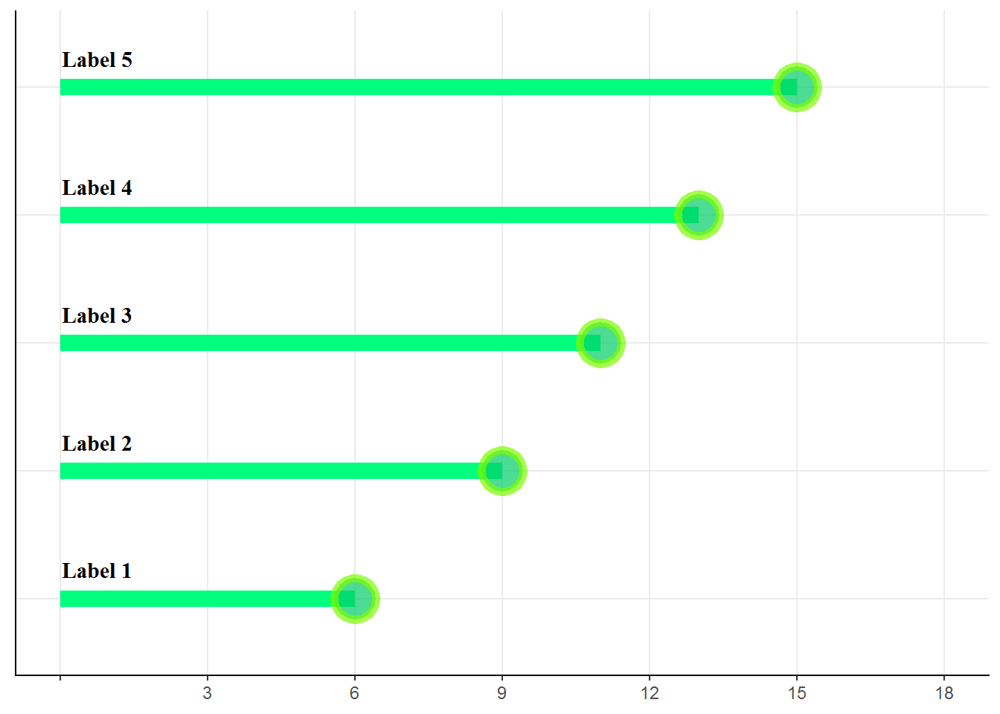
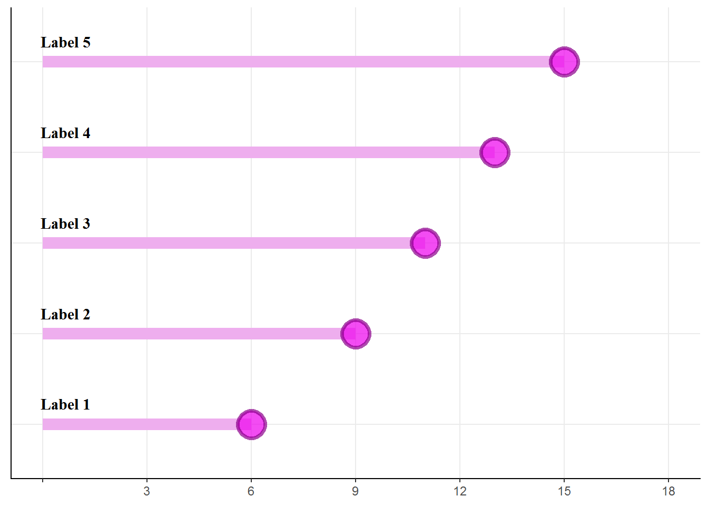

Lollipop charts in {R}
There comes a time in everyone’s life when ordinary barcharts are not good enough.
Bar charts are, frankly, boring. Here is one. I mean, how creative can you get with the color pallettes?

Time to perk up things a little? Lollipop charts is an option. Take a look:

This chart has been done in ggplot, which, to my mind, is an awesome piece of engineering because it affords so much flexibility. If the above chart makes sense to you, we can fix individual elements. here is the base code:
#define data
y<-c(6,9,11,13,15)
#create dataframe
data=data.frame(x=LETTERS[1:5], y=y)
#set up labels
yat<-c('','3','6','9','12','15','18')
library(ggplot2)
p<-ggplot(data, aes(x=x, y=y)) +
geom_segment( aes(x=x, xend=x, y=0, yend=y), color="springgreen",size=4) +
geom_point( size=8, color="lawngreen", fill=alpha("springgreen3", 0.3), alpha=0.7, shape=21, stroke=2)+
theme_bw() +
scale_y_continuous(limits = c(0,18), breaks = c(0,3,6,9,12,15,18),labels=yat)+
coord_flip() +
annotate("text", x = 1.225:5.225, y = 0.01, label = labels, size=4,hjust=0.05,family="serif",fontface =2)+
theme(
panel.grid.minor.x = element_blank(),
panel.grid.minor.y = element_blank(),
panel.border = element_blank(),
axis.line=element_blank(),
axis.title.x=element_blank(),
axis.title.y=element_blank(),
axis.text.y=element_blank(),
axis.ticks.y=element_blank())+
theme(axis.line.x = element_line(color = "black"), axis.line.y = element_line(color = "black")
)
plot(p)After much experimentation, I have come to realise that labels look best when they are placed on the bars (not inside, as we did in the bar plot, above). You may play around with the horizontal or vertical adjustments in the ‘annotate’ element, till you are satisfied with the final look. Here, I have placed the labels as annotate text items at X + 0.225, which transaltes into a coordinate 122.5% of the x variable.
Of course, color options are aplenty. Here is an option in (plum2.magenta2 and magenta4). The R color cheat sheet is available at https://www.nceas.ucsb.edu/~frazier/RSpatialGuides/colorPaletteCheatsheet.pdf

Just for the record, there are three color elements here: (i) for the bar, (ii) for the fill in the circle and (iii) for the boundary of the circle.
The color for the bar is defined in geom_segment
geom_segment( aes(x=x, xend=x, y=0, yend=y), color="plum2",size=4) The color for the fill in the circle and the boundary is defined in geom_point
geom_point( size=8, color="magenta2", fill=alpha("magenta4", 0.3), alpha=0.7, shape=21, stroke=2)Here we have kept the fill as green and marked the boundary shape as darkgreen.
Hope this helps. I am assuming you know how to manipulate the ticks, text and titles on the axes.
Have fun.